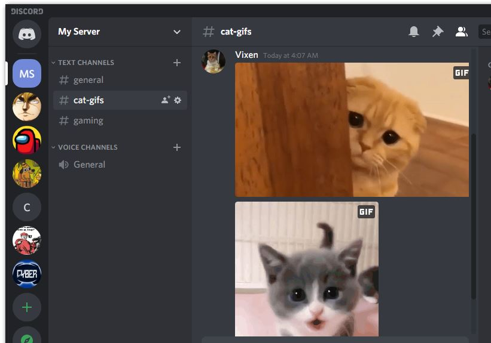

What is a Server?
Here you will learn more about what a Server on Discord is.
Discord allows its users to make communities, which can message or talk to each other. Each community is a server. You can write to people via text channels or talk to them via voice channels.
Starting your own server, or joining someone else's server, is free.
If you have interest in something, you can probably find a Discord server for it and talk to people who also share the same interest as you.
Every server can have multiple different channels, dedicated to a specific topic.
For example: You can have a channel for cat gifs, a separate channel for gaming, a third for tv-shows and so on.
In the picture below you can see a server with 3 text channels, one of which is dedicated only for gifs of cats.
